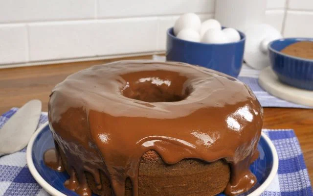

Receita de bolo de chocolate
Bolo de chocolate fofinho, rápido e
simples de fazer junto com uma xícara
de café às vezes é tudo que a gente precisa p
ara curar onde dói em uma tarde chuvosa.
Essa receita é prática e não precisa de
batedeira, sendo feita no liquidificador.
Para garantir que o bolo de chocolate cresça
e fique macio como a gente gosta, é importante
que a gente respeite o tempo de bater a massa
no eletrodoméstico indicado na receita. Isso
permite que as fibras da farinha criem a trama
que segura as bolhas criadas pelo fermento e
que garantem o crescimento do bolo. A calda
de calda de chocolate cobre o bolo finalizando
tudo e deixando ainda mais delicioso. Se você
quiser completar, pode adicionar chocolate
granulado ao topo para o bolo ficar bem
"chocolatudo". Não esqueça de untar a forma
para que o bolo saia por inteiro e depois de
40 minutos, você terá o melhor bolo de chocolate
saindo do seu forno.
Se quise conhecer o Site Oficial e so Clicar na imagem

| Tempo de Preparo |
| 40min |
Médio |
Custo médio |
| Ingredientes a (10 porções) |
| Massa |
| Quantidades |
Ovos |
Mantiga |
Açúcar |
Chocolate em Pó |
Leite |
Farinha de Trigo |
Fermento em Pó |
| 3 ovos |
2 colheres (sopa) de manteiga |
2 xícaras (chá) de açúca |
1 xícara (chá) de leite |
4 colheres (sopa) de chocolate em pó |
3 xícaras (chá) de farinha de trigo |
1 2 colheres (sopa) de fermento |
| Obs: Ingrediente para montagem do Bolo de Chocolate |
| Caldo |
| Quantidades |
Mantiga |
Creme de Leite |
Chocolate em Pó |
Açúcar |
| 2 colheres (sopa) de manteiga |
2 latas de creme de leite com soro |
7 colheres (sopa) de chocolate em pó |
3 colheres (sopa) de açúcar |
| Obs: Calda de chocolate para cobertura do bolo |
| Tabela Nutricional |
| Quantidades |
Calorias |
Carboidratos |
Proteínas |
Gorduras Totais |
Gord. Saturadas |
Gord. Trans |
Fibras |
Sódio |
Gramas por Porção |
| 508,21 kcal |
82,93g |
9,50g |
15,70g |
4,28g |
0,00g |
3,65g |
78,82g |
159g |
| Obs: Tabela Nutricional de um Bolo de Chocolate |
Modo de Preparo
Massa e Calda: Passo a Passo
Massa
- Em um liquidificador adicione os ovos, o chocolate em pó, a manteiga, a farinha de trigo, o açúcar e o leite, depois bata por 5 minutos.
- Adicione o fermento e misture com uma espátula delicadamente.
- Em uma forma untada, despeje a massa e asse em forno médio (180 ºC) preaquecido por cerca de 40 minutos. Não se esqueça de usar uma forma alta para essa receita: como leva duas colheres de fermento, ela cresce bastante! Outra solução pode ser colocar apenas uma colher de fermento e manter a sua receita em uma forma pequena.
Calda
- Em uma panela, aqueça a manteiga e misture o chocolate em pó até que esteja homogêneo.
- Acrescente o creme de leite e misture bem até obter uma consistência cremosa.
- Desligue o fogo e acrescente o açúcar.